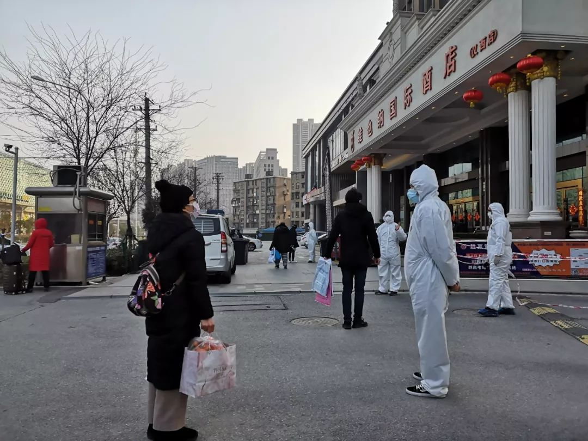
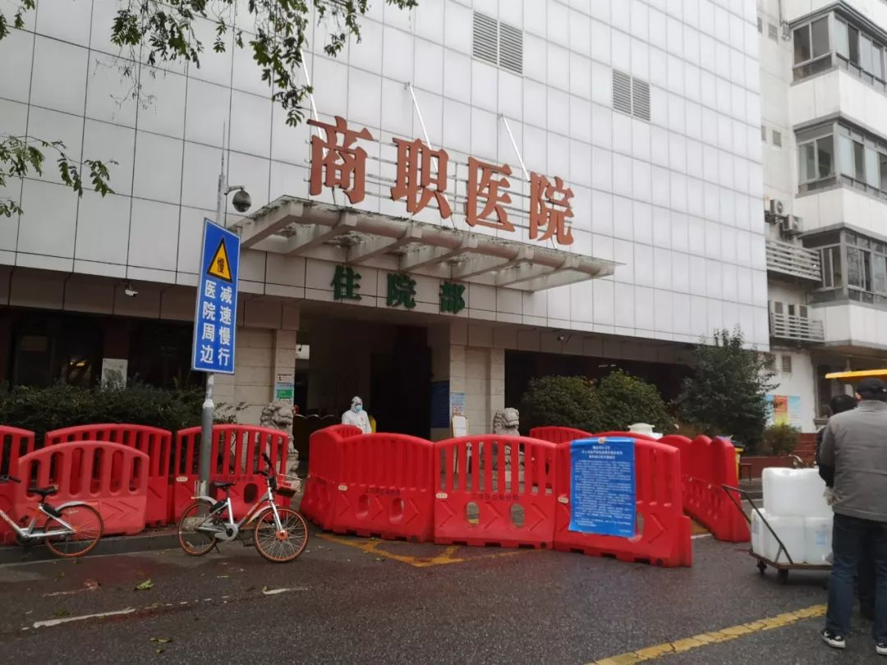

住进方舱医院72小时后，情况明显好转
原文链接 备份链接 武汉紧急改造启用的多个临时性“方舱医院”，承担了此次疫情中数量最大的隔离任务。虽然时间紧任务重，方舱医院的内部运行已经从最初的忙乱走向有序 文 | 《财经》记者 刘以秦 编辑 | 谢丽容 2月6日凌晨3点，在武汉一家 …


武汉封城之初遇上医疗挤兑，“居家隔离”政策随之推出。但社区资源和能力未匹配，反而加重家庭内部交叉传染。这是武汉病例此后暴增的主要原因。
纠错政策姗姗来迟，10天后的2月2日，“居家隔离”变为“集中隔离”。但初期隔离点医护能力不足，同样令政策推行吃紧。
形格势禁。方向原本没错的政策遇上资源不足，导致“好事变坏事。”政策执行僵化、调整过慢，无奈之中错上加错。
直到此后一周定点医院不断增加、火神山雷神山完工、方舱医院推出，外省医护人员的加入，医疗资源才逐渐跟上。
2月20日前，武汉储备10万床位。重症病人1.4万张，轻症点3万张，集中隔离点5.6万张。
医疗与社会资源逐步扩充，令决策与施策更具资源支撑。前车之鉴，令如今的施政者更注重细节实效，更注重及时调整纠错，武汉逐渐往“精细型”病人分流方向上转化。


△ 2月14日，理发师在帮援助医疗队医护人员剪头发，为了减少头发暴露带来的感染风险。吴靖摄
20多天以来，武汉某社区书记张平（化名）精神状态和身体慢慢好了起来，一直让他紧张、一度因此担忧是被新冠病毒感染的咳嗽也消失不见：“看来这不过是一场感冒”。
与之相伴，工作压力也逐渐减轻。1月底时，他一天数次面对着闯进社区办公室求安排床位、用车的患者和家属，半夜接到来不及住院的病人在家中去世、要求社区拉走遗体的电话。焦虑和恐惧写在他的脸上，口中不断重复一句外人听起来有点荒诞的话：“我得让我团队的人都活下来。”
那时，武汉封城刚满一星期。封城之初，恐慌的新冠病毒感染和疑似人群，像潮水一样涌向医院，医疗资源马上被挤兑，医院不堪重负。“居家隔离”决策此时推出，在短缺的资源下进行粗放式病人分流。
重压之下，全市2000多个社区承担病人隔离和分流的任务。社区工作人员，像民兵被派上了特种兵的战场。过去的20天，张平手下的社区工作人员有近一半辞职。十几个人面对2000多户家庭，在防护设备不足的情况下，每天上门排查隔离效果，安排住院——这是不可能完成的任务。
而由于家庭内部隔离和防护措施不足，全家被感染的例子比比皆是。得不到确诊的病人、危重病人的家属无法安心待在家，他们数次奔波于医院和社区，成为一个个移动感染源。
“居家隔离”可视为危机初期的无奈之举，但在明显看出未达效果之后，纠错依然姗姗来迟。在这期间，1月23日到2月2日，武汉报告确诊病例增长了10倍，从495例变成了5142例。
2月2日，政策突然转变，“集中隔离和收治”推向前台。然而各种资源没有跟上，隔离点缺乏医护能力，也没有患者急需的检测和就医通道，一开始政策难以推行，“应收尽收”的时间点一再推迟。
随着越来越多定点医院被征用，火神山、雷神山的完工，收治确诊轻症病人的十几个方舱医院的开放，以及密切接触、疑似人群的宾馆隔离点增多，还有外省医护人员的加入——在资源扩张下的“病人分流”，逐渐成为现实。
2月8日，曾担任武汉市委书记的中央政法委秘书长陈一新回到武汉，担任中央指导组副组长之后，张平明显感觉到执行力度一下子加大。2月13日，湖北和武汉又在同一天换帅，原上海市长应勇调任湖北省委书记，原济南市委书记王忠林调任武汉市委书记。
张平所在的这个中型社区，有2000多户人家、5000多居民，在2月15日那天，十几例危重病人都被医院收治，终于完成确诊患者“存量清零”。尽管手下的人走了一半，他做的工作开始聚焦于被严格管控出行的居民们买菜、买药，回归社区工作人员能力之内的事宜。
失败的“居家隔离”
1月20日，在武汉工作的互联网工作者陈一君（化名），是极少数的提前实行家庭内部隔离的人。那时武汉一线医护人员已敏感地意识到新冠病毒存在人传人的可能，外界舆论还停留在“可防可控”。
陈一君听到父母吃饭有些咳嗽，马上用公筷分开吃饭。28日，母亲开始发热，他让父母分房睡。29日，父母在各自房间隔离，三餐送到门口，督促他们量体温。家里酒精不够，轮番用紫外臭氧灯进行消毒。去医院做检查时，选在晚上十点，外界人流较少的时刻，外出穿的衣服和鞋子，全部放在门外集中消毒。
即便如此，感染还是发生了，父亲核酸检测为阳性，且病得越来越重；母亲CT显示肺部异常，核酸检测却为阴性。
武汉协和东西湖医院重症医学科ICU主任袁海涛，提到居家隔离时，认为老百姓很难意识到自己是否处在隔离状态，以及如何隔离。袁海涛在1月中旬转移危重新冠病人的过程中，不幸感染。当天回家时，尚未发热，浑身酸痛，他就把自己关进书房，第二天发烧后，直接到医院住院。尚未确诊时，他让家人做好隔离措施，为书房消毒，在极其专业的防护意识下，他的家人才没有被感染。
到了2月初，陈一君的父母都没有住进医院，陈一君在网上看到无数个求助的帖子，越来越绝望，开始加入了“挤兑医疗资源的大军中”，到处求人帮忙帮父亲找一张住院床位。他上网发帖、求助媒体，无所不用其极。
和他一样，1月底2月初，居家隔离导致的大量聚集性感染人群，又集体遭遇住院难的问题。而社区工作人员，反倒是最无能为力的人。陈一君多次打电话将父亲情况告知，他们的回复只是已将情况上报。
到了2月2日，武汉已征用40余家医院、1万多张床位逐步开放收治新冠病人，此时确诊数仅有5124名，仅为可收治床位数一半的情况下，依旧是一床难求。

△ 2月10日，定点救治医院-武汉市第八医院门口，医护人员在逐一接收来自社区、街道送来的发热或疑似患者。吴靖摄。
一位在武汉协和医院工作的医生称，住院人数一直以来都大于床位数。武汉12月底疫情开始，发热病人大量出现，当时核酸检测试剂盒尚未下发，各大医院收治病人的标准是CT观察肺部影像，“症状严重的就收”，袁海涛说。
1月19日国家卫健委宣布开始下放核酸检测试剂盒。之前大量住院病人没有出院，许多感冒病人因为恐惧托关系住院，即使公开的确诊人数低于床位数，实际上所有医院早已住满。
此时，核酸检测结果成为病人是否住院最艰难的门槛，那些本来CT检测后可能被收治入院的重症病人，成为等待核酸检测的“疑似病人”，不能入院，被隔离在家中。
张平社区在春节前后，就有两位80多岁的CT显示肺部异常的老人，尚未等到核酸检测，就因病情加重在家中去世。另一位50多岁的女性确诊病人，被社区告知，当天上级协调出了一张床位，可以去红十字会医院住院，在红十字会医院等待床位时排队了一天，还没等到床位，她的女儿打电话回社区哭诉母亲去世惨状：“妈妈死在医院的地上，裤子全部尿湿。”
高危疑似病人的家属也成为高度风险的密切接触人群，他们不断去医院排队等待一线入院的机会，或者不断找社区寻求解决办法，社区无法限制他们出入，居家隔离的意义荡然无存。武汉硚口区某社区的四位工作人员，就有一位被感染，导致同办公室的四个工作人员全部被隔离，整个社区的居家隔离工作陷入瘫痪。
政策虽然变了，但资源没跟上推进很难
政策转折点发生在2月2日。张平等社区工作人员收到了武汉市新冠肺炎防控指挥部的要求，对涉及新冠肺炎的四类人采取集中收治：确诊患者尽快安排床位；疑似患者进行集中隔离；发热患者集中隔离观察；密切接触者集中隔离——从根本上推翻了居家隔离的方案。
2月3日，一批宾馆被改造为隔离点，但政策推进很难。
最初指挥部提出的要求是最晚至2月7日，完成武汉所有疑似病例的核酸检测，争取在2月5日24时，收治所有确诊病人。后来，又提出9日以前完成发热病人检测，9日24时前所有确诊居家隔离的病人都要收治。再后来，这个时间点又推迟……
归根结底，原因在于医疗资源没有跟上，隔离点缺乏医护能力，定点医院的床位依然空不出来，一些本应住院的病人却被安置到隔离点。八点健闻的文章《武汉新冠肺炎四类人员集中隔离，为何这么难？》中记录了一位患者的控诉：“我这么重的病人就把我拖这里观察？到时候晚上要吸氧了，啥都没有，那就等死了是不是？”

△ 2月3日，隔离酒店门口，疑似患者询问工作人员目前隔离情况。吴靖摄。
家住武汉市江岸区天兴花园23岁的郑秀和19岁的郑涛两姐弟（均为化名），父母被确诊为新冠病人，于2月3日被送进宾馆隔离点，2月7日父亲休克，隔离点工作人员让郑秀领回家，她想办法送到了协和医院，医院当时看情况极其危重，不收。她跪在地上求医生收下，最终虽然收治，但为时已晚，父亲于2月8日去世。当天，母亲又在隔离点呼吸衰竭，送到汉口医院，医院没有床位，只能在大厅输液，自己买袋装氧气。两姐弟在大厅冰冷的铁皮椅子上坐了两夜。最终，母亲以危重病人的身份被送往火神山医院。
父亲确诊、母亲高度疑似的陈一君作为密切接触人群，在社区的反复要求下于2月4日去了宾馆隔离点，他的初衷在于如果顺从社区，或许社区能够安排病重的父亲入院。但社区依然束手无策，最终，他反复努力找寻私人关系终于把父亲送进医院。
这个问题的解决之道一方面是各地医疗队的支援，另一方面是新增定点医院和火神山、雷神山的建设，以及一种新类型医院的大规模建设——方舱医院。
“方舱医院建晚了”
2月1日，呼吸与危重症医学专家王辰院士到武汉考察，他的建议成为武汉新冠疫情防治中一个重要转折点。在2月5日晚接受白岩松访谈的视频中，王辰指出轻症病人收治不足，居家隔离不但不会避免传染，反倒会造成社会和家庭的进一步感染，这是加剧疫情的最重要因素。他提出了“方舱医院”的概念，利用大型场所，集中收治轻症病人。
2月3日，总床位数超过一万的第一批15家方舱医院开始建设，并于2月5日陆续投入使用，相比定点医院的床位，方舱医院的床位起初较为宽松，它收治病人的标准起初是确诊病人，轻症患者，没有基础疾病，65岁以下。
多位业内专家认为方舱医院建晚了，“这次新冠疫情和2003年的sars很不一样。新冠确诊人数数量极多，但大多数是轻症，需要方舱那样的大型设施来容纳轻症病人。”
△住进方舱医院的患者，开始跳起广场舞
2月4日开始建设的塔子湖方舱医院由湖北省中西医院接管，2月12日开始接收第一批病人，到2月13日下午5点，一共收了430人。
该院院长凌瑞杰对八点健闻说，原则上方舱医院是收轻症确诊病人，因为条件比较简陋，也有部分病情比较重的患者收进来之后，再转出到定点医院去。“现在要求（方舱医院）不能有人去世，危重病人吸氧设备之类的都不到位，没有安全保障。转出去的标准是，按照指南要求，血氧饱和度、严重的基础病等来判定。”（按照第五版诊疗方案：呼吸窘迫、呼吸频率（RR）超过每分钟30次；静息状态下血氧饱和度低于93%；氧合指数低于300mmHg，满足这三条指征中的任意一条就属于重型患者）
2月13日收治的430人中，转走了10个重症患者。“很多定点医院都爆满，只能转到自己的医院，别的医院没办法接手。”凌瑞杰说道。
集中隔离控制了疫情的扩散，但早期错过治疗的病人需要定点医院开拓更多的床位。为了扩张重症床位，2月中旬，中南医院又扩张了200张床，政府一声令下，两三天之内，分批收治重症病人。医院连夜施工，将普通病区改造为传染病病区。
但因为分流政策晚了一步，而重症患者的治疗周期较长，定点医院仍然一床难求。
不堪重负的定点医院，外界把收治病人当作对他们唯一的要求，但一些医院内部病区的安排不合理，又加大院内感染的风险。2月中旬，一个外省医疗队援助一家武汉市定点医院，他们发现几十位未做核酸检测的疑似病人，病房是三人一间。医疗队的一名医生提出质疑，疑似病人应该单独隔离，否则容易交叉感染。武汉那家医院院长听了非常不满，认为医疗队是想少收病人。最终，北京医疗队坚持多人病房只收危重的确诊患者。“这些危重患者，发病时间都是在2月初，发病都有十几天了，时间比较长，错过了早期治疗的最佳时期。”上述医生说道。
过渡期的“流浪病人”
陈一君的父亲住医院后，他又在隔离点开始担心母亲，因为核酸检测是阴性，即使肺部CT显示单肺感染，根本没有入院或者是进入收治轻症患者方舱医院的可能。她被送到离陈一君不远的另一个宾馆隔离点。“只有药，不能打针，也没有吸氧机等设备，一旦病情加重，该怎么办？”这成为陈一君隔离期间最焦虑的问题。
核酸检测，一直是新冠疫情中决定病人是否收治、决定确诊病人数量的重要指标。一线临床医生却对这一指标充满争议，阳性的一定是确诊病人，但因取样等因素，“假阴性”的存在导致核酸检测准确率只有30%-40%。
最早提出应把CT检测做为临床确诊准则的中南医院张笑春认为，病毒潜伏是跟病毒载量和采样有关。阳性确诊患者在治疗后，病毒被消灭一部分，病毒数量减少，很可能取样的部位检测不到病毒，检测结果是阴性，但肺泡内还有病毒。多地出现，一些患者多次核酸检测为阴性，但病症不断恶化的情况。
1月底核酸检测放开后，确诊人数暴增，但还有许多阴性的患者,CT诊断是应该继续治疗不该出院的。以第五医院为例，1月31做的住院病人的检测，超过70%是阴性，医院就在2月5日发布上级部门的内部通知，从当天起，“能出院的尽量出院，如有临床症状重的，可以继续留院观察或治疗，稍后会把双阴患者名单上传，各科室针对自己科室的患者尽量劝出院”，该通知得到了内部医护人员的证实，大批患者出院。
同济、协和、中南等收治危重病人的定点医院，医生内部达成一个默契。 “尽量只让相对轻症的患者出院，很多阴性患者真的不适合出院。”一位同济医院的医生说。
对这一类患者，决策层早有考虑。2月2日，武汉征用第四批17家定点医院，专门收治从前三批定点医院转出的首次检测结果为阴性的疑似病例，包括武汉商职医院、武汉市第八医院等。
但第四批700多张床位，无法接收全部转出的患者。
以江汉区为例，全区只有武汉商职医院能够接收需要继续治疗的双阴性患者。武汉商职医院院长对八点健闻介绍，医院听从安排，只接收红十字会医院转出的这类病人，由120急救车接送，“双阴性，隔离观察，有基础疾病在这里治疗，比如这个患者还有糖尿病、中风等”。

△ 2020年2月10日，武汉市商职医院门口被封锁，此时已经接收了200名左右的新冠双阴但仍有基础疾病需要治疗的患者。吴靖摄。
而江汉区还有湖北省中西医结合医院、协和医院、同济医院等家定点医院，上述类型患者在转出时就没有定点医院接收。
从2月1日开始，截至2月10日左右，商职医院已经差不多快收满了患者，230张床位，配备的医护人员除了本院的，还有来自社区医院的和援助医疗队的，但仍然“真的不够”。
当核酸检测成为确诊病人的唯一标准时，大量的阴性但重症的病人，被卡在核酸检测这一标准上，成为现实中要么入不了院，要么必须出院的“流浪病人”。
储备10万床位，收治能力是精细分流之根本
让张笑春等临床一线医生感到惊喜的是，2月5日，第五版诊疗指南的确诊标准添加了CT影像的临床判断，这意味着在准则上打破核酸检测的缺陷。
调整几天后，对外公布的确诊病例就按照诊疗指南。2月12日，武汉确诊人数一天暴增13436例——这并不是真的新增，而是原本已有但遮蔽的实际病例浮出了水面。
核酸检测双阴，但CT检测有肺部影像学改变的“流浪病人”有了被医院接收的条件。
让陈一君开心的是，他的母亲终于可以从隔离点转往方舱医院。
但暴增的确诊病人，更加考验定点医院的收治能力。张平所在的社区，街道要求将一位65岁的核酸检测双阴、肺部影响改变的老人送到红十字会医院。这位老人检测标准改变后，成了确诊病人，此前因为双阴的检测结果，定点医院不收治，而方舱医院因为病人65岁，也不收治，她成了无处可去，只能在家隔离的病人。街道办保证医院一定有床位。但病人被送到医院后，等待了几个小时还没有被安排床位，老人几小时没吃没喝，也没人管，开始在地上打滚，闹了起来。后来终于入住。
并不是所有社区都像张平他们那样，已将所有确诊患者送进医院。硚口区一个1920户，5000人左右的小区，因为社区书记退休，一个社区人员感染，2月12日社区的7个确诊病人，全部在家，依旧没有送往医院。
征用定点医院的床位依然在进行，由《武汉市新冠肺炎疫情防控指挥部》下发的2020年25号文中，提到：“武汉市将在2月20日前，达到定点医院病床14000张，用来收治重症病人。”武汉市2月20日预计达到的新增床位储备总数将达到10万张，除去定点医院收治重症病人的14000张之外，还有轻症点（方舱）床位30000张；集中隔离点床位56000张。
一个让人感到有希望的现象是，武汉新增新冠肺炎的确诊数据在2月12日爆涨之后，此后三天，新增确诊数据急剧下降。2月13日降至3910例；14日降至1923例；15日是1548例；而治愈人数却在大幅增加，2月15日，国家卫生健康委员会党组成员、副主任、湖北省委常委王贺胜在国新办的发布会上介绍称，重症定点医院武汉金银潭医院和肺科医院出院率超过30%。

△ 吴晔婷制图
方舱医院也将迎来建立伊始第一个出院的高峰，2月15日下午，武汉客厅方舱医院首批17位患者出院，武汉大学中南医院副院长、武汉客厅方舱医院副院长李志强接受媒体采访时称：“最近几天应该会是方舱医院出院的第一波高峰期。因为自2月7号开舱正式收治病人，已过去一周时间。很多病人经过治疗后，都处于稳定再到恢复的状态，等几天内几项检测客观指标达标后就会达到出院标准”。
还有许多一个个具体的希望逐渐出现。父亲去世，母亲病情危重的郑秀、郑涛姐弟，姐姐已在两天前被收治到第一医院，弟弟也去了隔离点。在火神山一度病危的母亲，昨天忽然“想吃饭，吃水果”。
陈一君一度病危的父亲，2月8日开始接受瑞德西韦的双盲试验，随后逐渐退烧，虽然血氧尚未达标，但最危急的时刻已渡过。在隔离点隔离了12天的陈一君，一直未发烧。他刚做完核酸检测，如果结果是阴性，马上就可以走出隔离点。十天前的绝望，已开始慢慢消散。
吴靖|撰稿
微信号：1136352312
王晨|统筹、撰稿
微信号：2174127
吴晔婷|撰稿
微信号：wytlucky19
王吉陆|责编
微信号：wangjilu006

我们尊重原创版权，未经允许请勿转载。
授权转载
郑琪 微信号: 1281949389
商务合作
上海：leslee 13916263824
北京：Jessie 13911125922
线索爆料、意见反馈，加入核心读者社群
请扫码联系健闻君

让朋友们看到你也在看
↓↓↓
原文链接 备份链接 武汉紧急改造启用的多个临时性“方舱医院”，承担了此次疫情中数量最大的隔离任务。虽然时间紧任务重，方舱医院的内部运行已经从最初的忙乱走向有序 文 | 《财经》记者 刘以秦 编辑 | 谢丽容 2月6日凌晨3点，在武汉一家 …
原文链接 备份链接 2 月 9 日下午，在被方舱医院「退回」4 天后，刘俊一家被街道居委会通知，当日会安排车辆送其父母入院治疗。 在此之前，经历了数日的网络求助，刘俊一度感到入院无望，特别是在父亲退烧后，几乎接受了无法入院治疗的事实。对于 …
原文链接 备份链接 伴随着火神山、雷神山医院开始收治病人，15家方舱医院陆续启动， 各省医疗队开赴武汉，武汉所有确诊患者与疑似病例都将“应收尽收”。 在人类抗击疫病的历史上，“武汉会战”已成为一场史无前例的超级行动 图/新华、中新 武汉 …
原文链接 备份链接 06.02.2020本文字数：4302，阅读时长大约7.5分钟 导读：一周时间，武汉新增病例5.5倍增长，累计病例增长3.69倍。 作者 | 第一财经 马晓华 胥会云 武汉封城之后，湖北以外的各省份对新型肺炎展开了“ …
原文链接 备份链接 在医学专家们看来，集中收留、隔离是第一步。接下来对疑似病患的确诊、分类诊治、收治入院，将是对医疗、物资、人员分配等多重资源配置能力的综合考验，相信各方面群策群力可以渡过难关 文 |《财经》 …